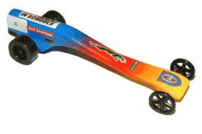
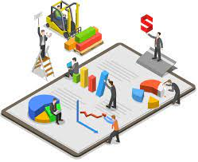

About Our Trade
Construction is a vital industry, creating buildings and spaces that connect communities, providing jobs, and improving society.

Construction is a vital industry, creating buildings and spaces that connect communities, providing jobs, and improving society.
In construction we made co2 cars and raced them
Cranes. This kind of equipment makes it easier to lift heavy materials like steel trusses, steel frames, and concrete blocks to their desired location and height. ... Backhoe. Bulldozers. Concrete. Steel. Masonry Construction Laborers. Electricians.
my name is Kaytlyn Combe and I chose constrution because if we don't we wouldn't have home, jobs, and biuldings without constrution. It can be old it can be the future it can be anything that you want it to be. IF YOU HAVE QUESTIONS GMAIL nakc016429@elevate208.org FOR MORE INFO